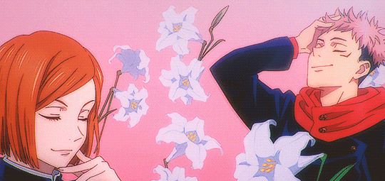

En el mundo de Jujutsu Kaisen, abarcan las emociones negativas de las personas, lo cual pueden generar "maldiciones", estos son seres sobrenaturales que representan una amenaza para la sociedad. Para combatirlas existen los hechiceros jujutsu, personas capaces de utilizar energía maldita y diferentes técnicas para enfrentarlas.
La historia comienza cuando Yuji Itadori, un joven con una fuerza física fuera de lo normal, se encuentra con uno de estos objetos malditos: uno de los dedos de Sukuna. Durante un combate en la escuela donde este asiste, sus compañeros se ven amenazados por una maldicion poderosa, para salvarlos, Yuji termina comiéndo el dedo y se convierte en el "recipiente" de Sukuna.
A partir de ahí, es encontrado por el profesor Gojo e ingresa a la escuela de hechicería, donde conoce a personajes como Megumi Fushiguro y Nobara Kugisaki. Esta serie desarrolla tanto sus enfrentamientos contra maldiciones como las relaciones entre los personajes y los conflictos internos del mundo de los hechiceros.
Esta serie combina elementos como la fantasia oscura, accion, drama, aventura y comedia